0 Installer l’appli
Amicale est une appli web : rien à télécharger dans un magasin d’applis, pas de compte, pas de publicité.
Sur iPhone / iPad
- Ouvre le lien reçu par SMS dans Safari.
- Touche le bouton Partager (carré avec une flèche).
- Choisis Sur l’écran d’accueil, puis Ajouter.
- Ouvre ensuite toujours Amicale depuis l’icône violette de l’écran d’accueil.
Sur Android
- Ouvre le lien dans Chrome.
- Menu ⋮ → Installer l’application (ou « Ajouter à l’écran d’accueil »).
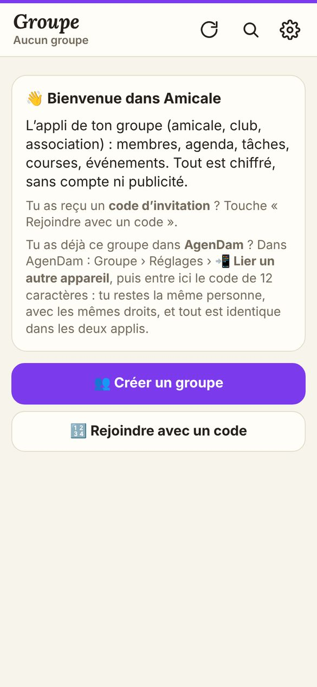
1 Recevoir l’invitation et créer sa fiche
Exemple : Paul Durand, président (administrateur), invite Claire Moreau au bureau.
Paul invite administrateur
- Onglet Membres → + Inviter quelqu’un.
- Il choisit le niveau : Bureau (voit tout) ou Aide extérieur (voit seulement ce qui est partagé avec les aides).
- L’appli crée un code à 8 caractères, valable 7 jours, pour une seule personne.
- Envoyer par SMS : le message contient le lien de l’appli et le code.
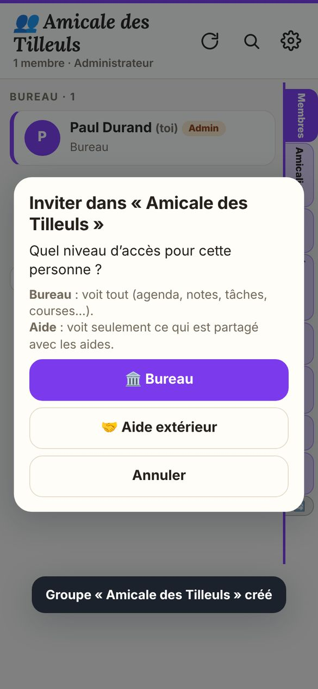
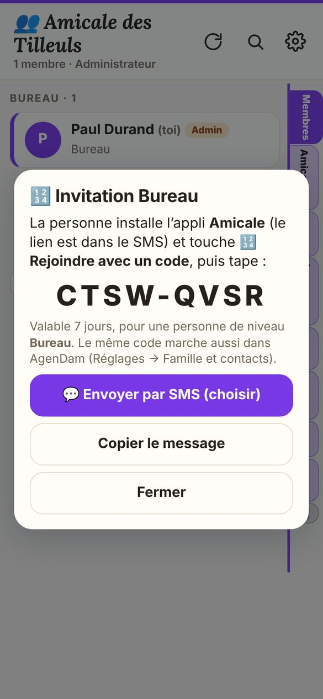
Claire reçoit le SMS nouveau membre
- Elle installe Amicale avec le lien (voir étape 0).
- Elle touche 🔢 Rejoindre avec un code et tape le code (ou colle tout le SMS : l’appli trouve le code toute seule).
- Elle remplit sa fiche : prénom et nom tels qu’ils apparaîtront, téléphone, mail perso, mail de travail. Tout est facultatif sauf le nom.
- Rejoindre : c’est fini.
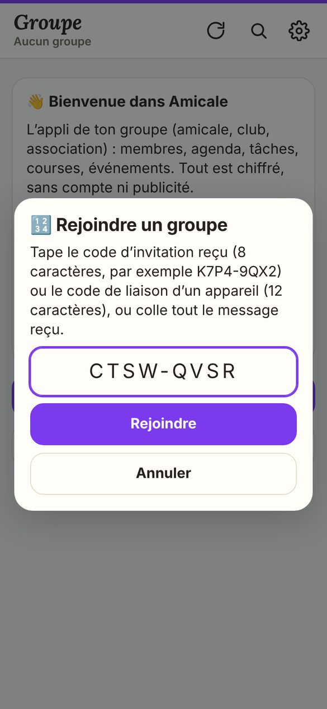
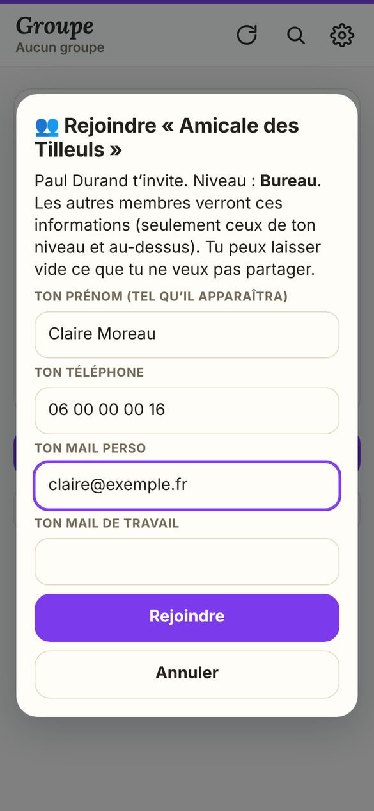
Paul voit Claire arriver
- Claire apparaît dans Membres, rubrique Bureau.
- Paul touche sa fiche pour lui donner un titre (secrétaire, trésorière…), l’appeler, lui envoyer un SMS ou un mail.
- Il peut aussi la passer en Aide, ou la retirer : les clés du groupe sont alors renouvelées, elle ne reçoit plus rien.
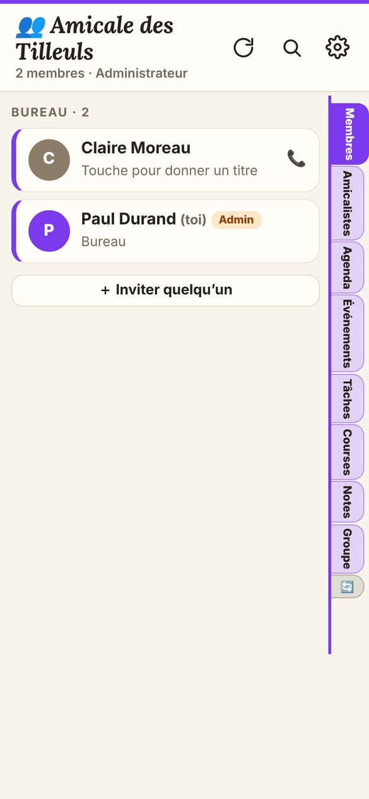
2 Inscrire un amicaliste et le faire signer
Exemple : Claire inscrit Jean Dupont, sergent, qui paie 20 € par carte bancaire et signe son bulletin au doigt sur le téléphone. bureau seulement
La fiche de l’amicaliste
- Onglet Amicalistes → + Ajouter un amicaliste.
- Nom et prénom (en MAJUSCULES pour le nom, c’est plus lisible), grade, catégorie (actif, honneur, bienfaiteur, ancien), date d’adhésion, cotisation, patch reçu, régime particulier (halal, végétarien, allergie…), notes.
- En bas, Action : 📝 Bulletin d’adhésion : faire signer, puis Ajouter.
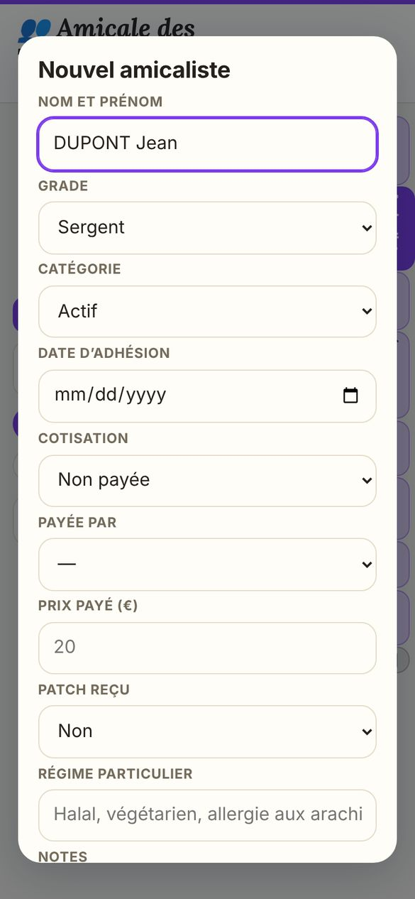
La signature au doigt
- Le bulletin s’affiche déjà rempli : nom, grade, nom de l’amicale, année, engagements, mention sur les données personnelles.
- Le prix se calcule tout seul d’après le grade (tarifs réglés une fois par l’administrateur, voir l’encadré).
- Choisis le règlement : carte bancaire, espèces, chèque ou virement.
- Tends le téléphone : l’amicaliste signe au doigt dans le cadre (Effacer la signature pour recommencer).
- ✓ Valider et créer le PDF.
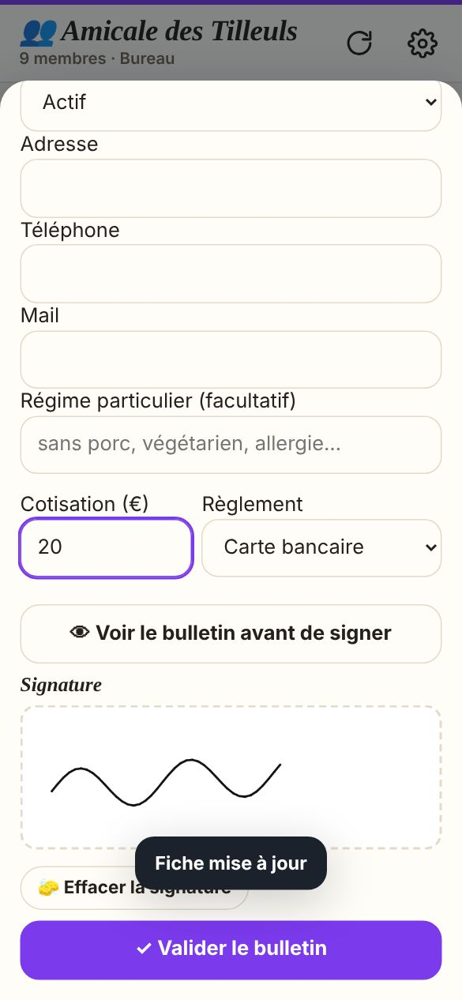
Le résultat
- Sous le nom : « cotisation ✓ 20 € (CB) · 📝 bulletin ✓ · ✍️ inscrit par Claire Moreau ».
- La cotisation est cochée toute seule, le PDF du bulletin est prêt (fiche → 📄 Rouvrir le bulletin).
- Le bulletin arrive chez tout le bureau, pas chez les aides.
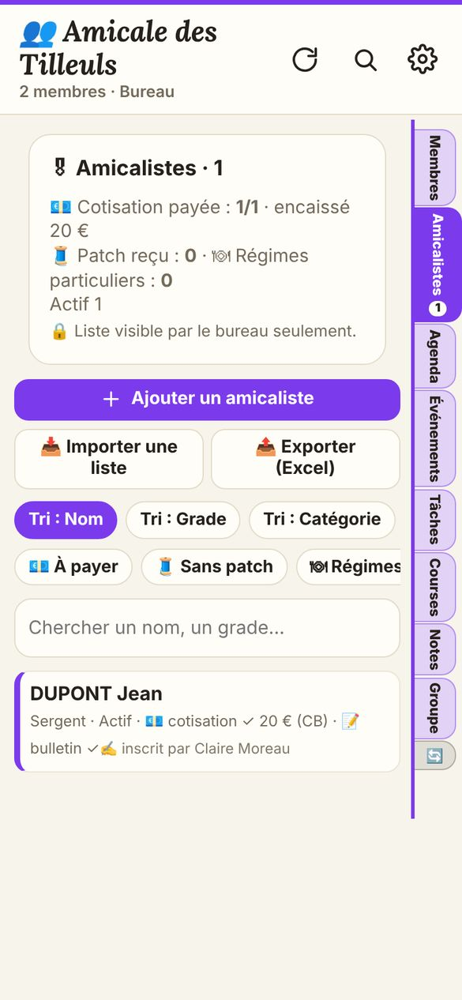
3 Archiver les bulletins en PDF
Une fois par an (ou quand tu veux), l’administrateur range tous les bulletins signés dans un seul fichier, puis libère la place dans l’appli. administrateur
- Onglet Amicalistes → 🗄 Archiver les bulletins signés (le nombre est indiqué).
- Créer le ZIP : un PDF par personne, nommé NOM-Prénom, dans un seul fichier « bulletins-AAAA-MM-JJ.zip ». Sur iPhone, choisis Enregistrer dans Fichiers (iCloud Drive…).
- Une fois le ZIP bien rangé : Oui, libérer la place. Les signatures sont effacées sur tous les téléphones du bureau.
- La fiche garde la mention « 📝 bulletin archivé ».
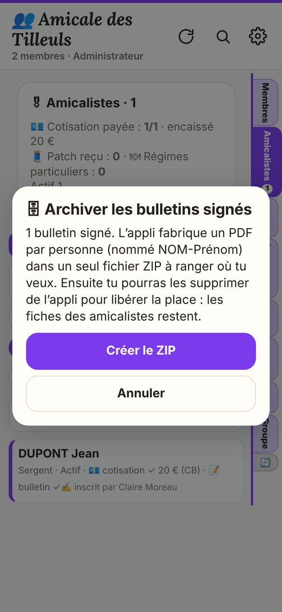
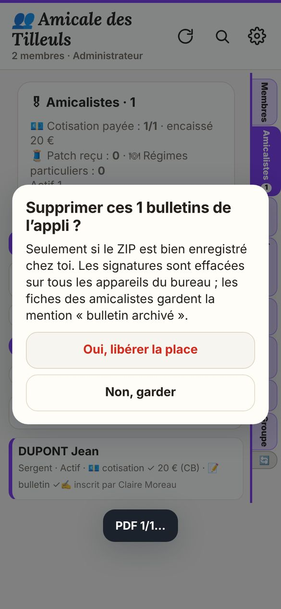
Après l’archivage
La liste reste complète : chaque amicaliste garde sa fiche, sa cotisation et la mention « bulletin archivé ». Seuls les bulletins signés (les plus lourds) ont quitté l’appli, ils sont dans ton ZIP.
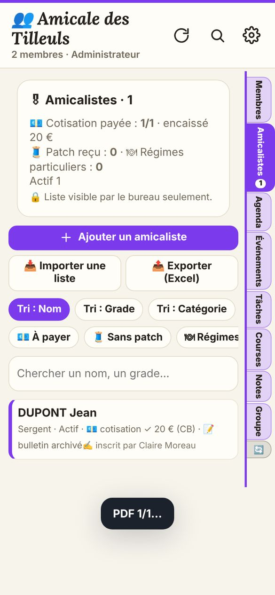
4 Tâches et courses : qui fait quoi
Chacun voit d’un coup d’œil ce qui reste à faire, par qui, et qui l’a fait.
Les tâches
- + Nouvelle tâche : quoi, pour qui (👤), pour quand (📅), visible par le bureau seulement (🔒) ou par tout le monde.
- Sous chaque tâche : 👤 la personne chargée, la date, et ✍️ qui l’a écrite ou modifiée.
- Une tâche faite se coche et passe dans Faites : on voit qui l’a cochée (ex. « ✍️ Claire Moreau » pour les cadeaux de Noël).
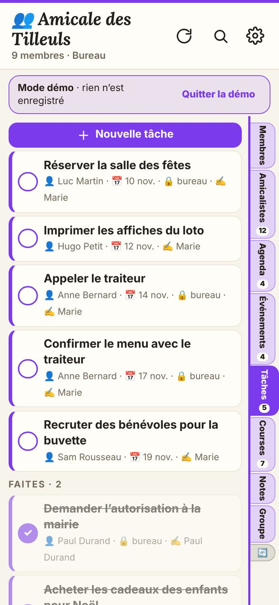
Les courses
- Plusieurs listes : Courses, Buvette, Local… (＋ Liste pour en créer une).
- ⭐ Mes habituels : un appui ajoute l’article, un second le retire (boissons, apéro…).
- Les articles sont rangés par rayon, avec la quantité et les boutons − +.
- Au magasin, on coche : l’article passe Dans le chariot avec le nom de celui qui l’a pris (« ✅ Luc Martin », « ✅ Hugo Petit »). Personne n’achète deux fois la même chose.
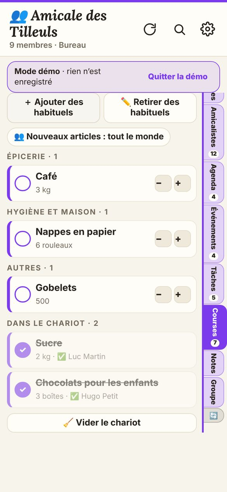
5 La soirée de Noël de A à Z
Exemple complet : repas de Noël le samedi 19 décembre à la salle des fêtes, 20 € par adulte, cadeaux pour les enfants. On prépare, on inscrit, on encaisse, puis le soir même on distribue avec la page Jour J.
1. Créer l’événement
- Onglet Événements → + Nouvel événement.
- Titre « Soirée de Noël », date, lieu, description, et visible par : bureau seulement ou aussi les aides.
- Type : Repas (avec tickets à distribuer) ou autre (arrivées, cadeaux…).
L’événement apparaît dans la liste de l’année, avec l’avancement de la préparation (✅ 3/7).
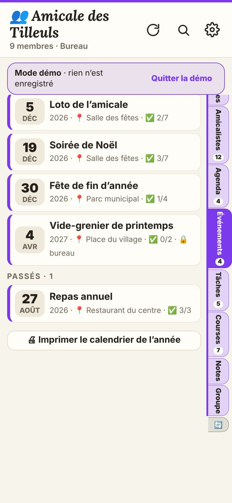
2. La préparation : qui fait quoi
- Une liste à cocher : réserver la salle, choisir le traiteur, acheter les cadeaux, trouver le Père Noël, décorer…
- Chaque ligne a son responsable (👤). Quand c’est fait : « ✅ fait par Luc Martin » et l’heure.
- 📥 Importer une liste : colle une liste depuis Word, Notes ou un mail (une ligne par tâche), ou choisis un fichier Excel/Word. Les colonnes Heure, Tâche et Responsable sont reconnues toutes seules.
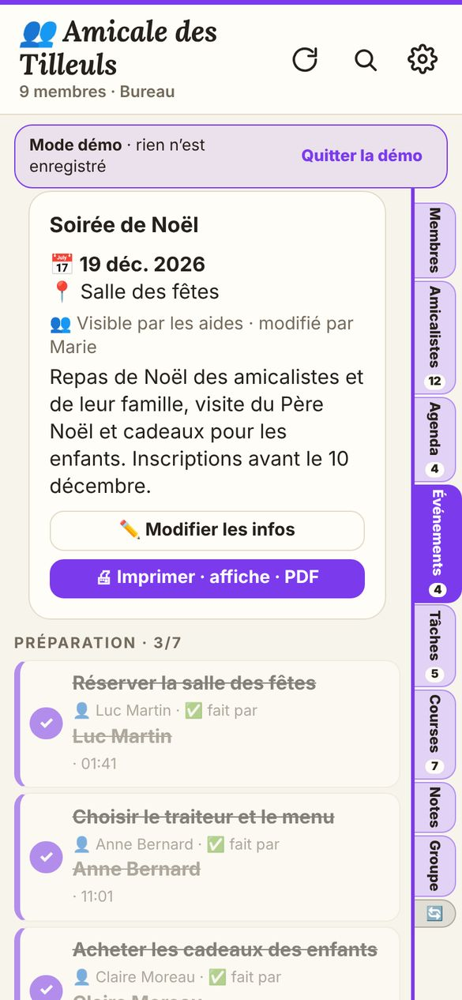
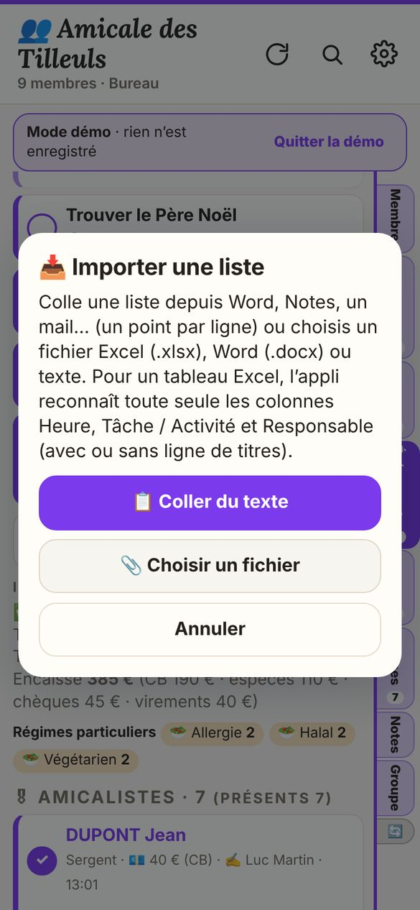
3. Les inscrits et l’argent
- Deux groupes triés tout seuls : amicalistes (reconnus d’après ta liste) et non-amicalistes (invités, familles).
- Ajouter des inscrits : 🎖 Ajouter des amicalistes (on coche dans la liste), 📥 Importer une liste d’inscrits (Excel, Word, texte collé) ou ✍️ Ajouter des noms à la main.
- Pour chacun : nombre de repas et de boissons (− +, 2 pour un couple), montant payé et règlement.
- En haut, les totaux : tickets, encaissé (dont CB, espèces, chèques, virements) et les régimes particuliers en orange (Halal 2, Végétarien 2, Allergie 2) pour prévenir le traiteur.
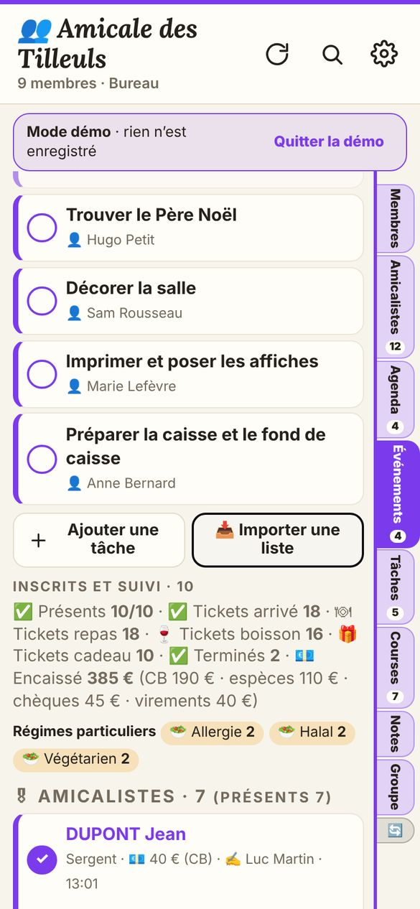
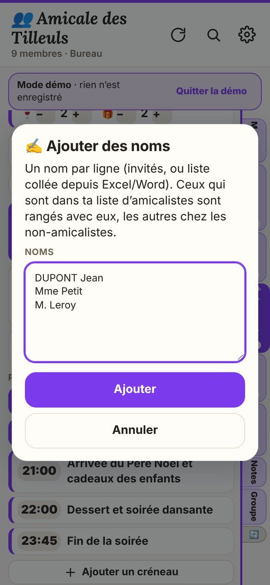
4. Ce qu’on distribue : repas, boisson, cadeau…
- ⚙️ Ce qu’on distribue : choisis les rubriques de la soirée. Pour Noël : ✅ Arrivé, 🍽 Repas, 🍷 Boisson, 🎁 Cadeau. Tu peux en inventer (« Ticket tombola », « Entrée »…) et changer plus tard.
- +1 cadeau pour tous : chaque inscrit reçoit 1 dans la rubrique, puis on ajuste (une famille avec 3 enfants = 3 cadeaux).
- 📤 Exporter (Excel) : la liste complète pour le traiteur ou le trésorier, avec les régimes.
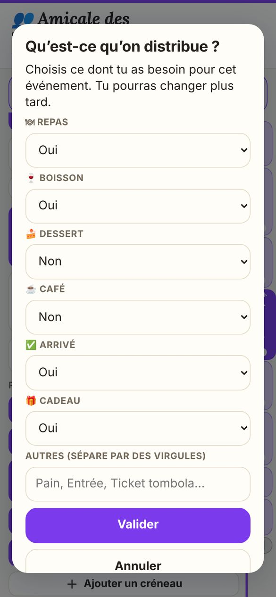
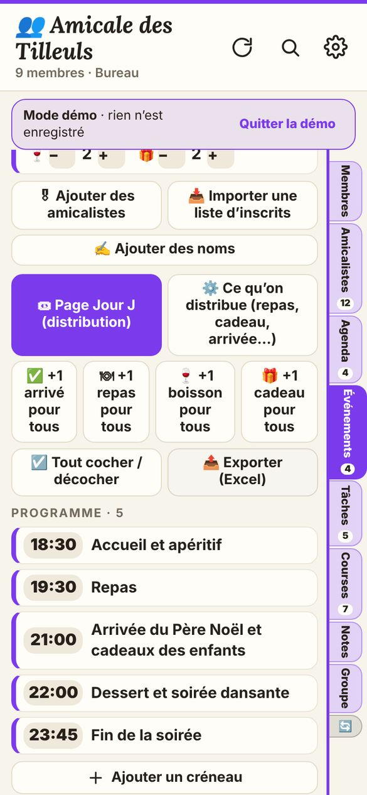
5. Le programme et l’affiche
- Programme : 18:30 accueil, 19:30 repas, 21:00 Père Noël et cadeaux, 22:00 dessert et soirée dansante… (Ajouter un créneau).
- 🖨 Imprimer · affiche · PDF → 🖼 Affiche à placarder : l’appli choisit un style « Noël » tout seul. Tu changes le style, les couleurs, les textes, tu ajoutes un logo ou une photo, tu déplaces et agrandis tout au doigt.
- L’affiche est partagée avec le groupe : les autres la retrouvent telle quelle.
- On imprime aussi le programme seul, la liste de préparation ou la fiche complète.

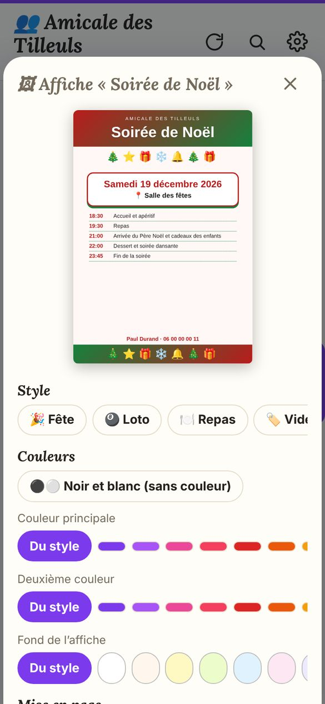
5 bis. Un repas pour un événement : l’exemple du croque-monsieur 🥪🛒
- Exemple simple : repas du midi, 13 inscrits. Partie 🍽 Repas de la fiche : le nombre de repas vient tout seul des tickets repas des inscrits, ou se tape à la main.
- ✏️ Un plat tapé à la main : « Croque-monsieur jambon-fromage », pour 1 personne : 2 tranches de pain de mie + 1 tranche de jambon + 1 tranche de fromage. L’appli multiplie par le nombre d’invités.
- C’est le même repas pour tout le monde : c’est nous qui choisissons, pas chaque invité.
- ⚠️ Régimes particuliers : le bandeau orange les liste (avec les noms). Chaque plat a « Pour qui ? » : on met le croque jambon-fromage pour « tout le monde sauf régimes » et une variante (croque fromage) « seulement les régimes ». Plus 1 boisson par personne.
- 🛒 Envoyer dans les courses du groupe : la liste se fait toute seule, quantités additionnées (ex. 26 tranches de pain de mie, 10 de jambon, 16 de fromage, 13 canettes), sans doublon si on renvoie.
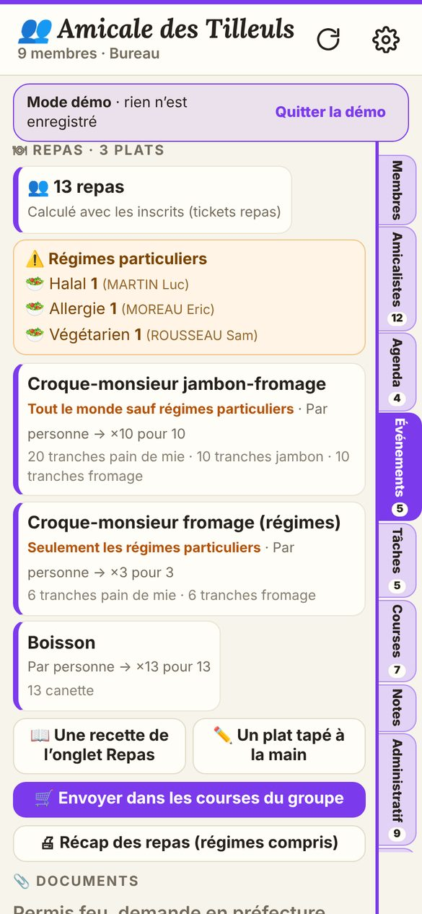
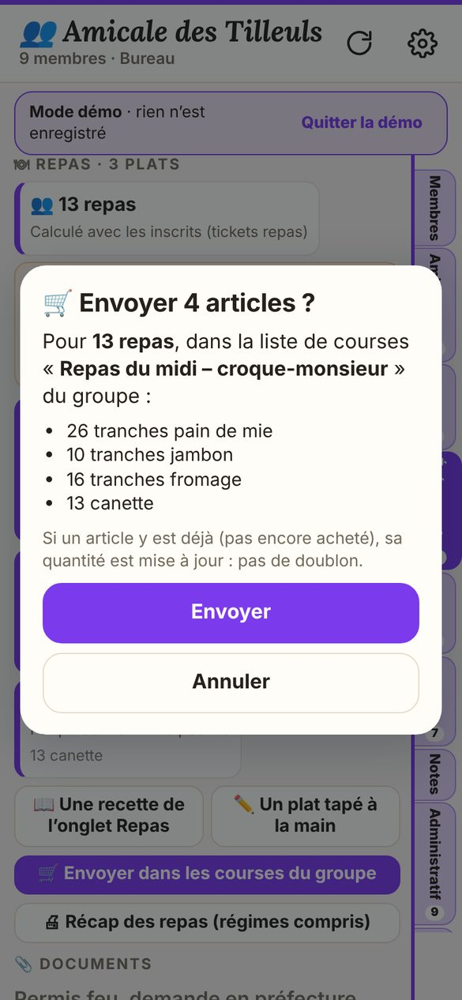
6. L’événement est dans l’agenda
Rien à recopier : la soirée apparaît toute seule dans l’onglet Agenda du groupe, vue Mois, le samedi 19 décembre (trait de couleur sous la date). Touche le jour pour voir le détail et ouvrir l’événement.
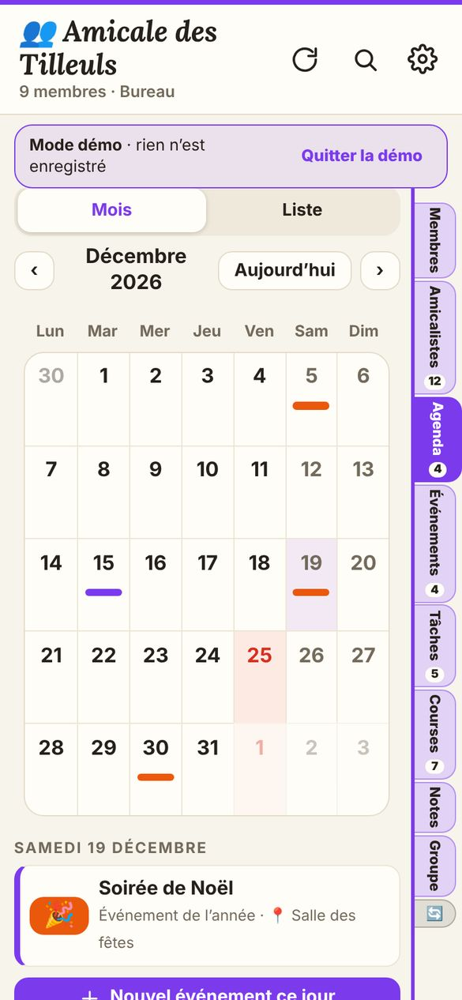
7. Le soir même : la page Jour J
- 🎟 Page Jour J (distribution), sur un ou plusieurs téléphones en même temps (accueil, bar, Père Noël…).
- Cherche un nom, ou filtre par grade ou par régime. Onglets Amicalistes, Non-amicalistes, Terminés.
- Un appui par ticket remis : « Arrivé 1/2, 2/2 » pour un couple, « Repas 1/2 », « Cadeau »… Ce qui est remis devient violet.
- Quand tout est remis, la personne passe dans Terminés. En haut, il reste toujours combien de repas, boissons, cadeaux à donner.
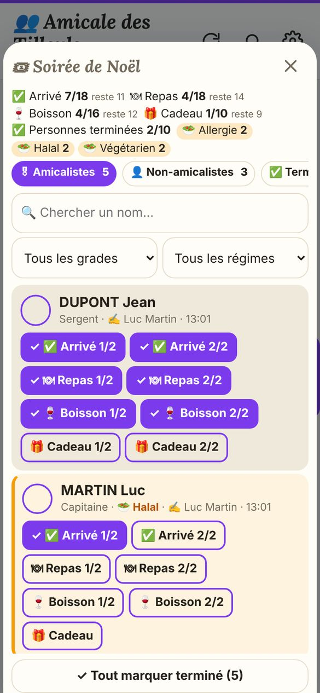
Et l’an prochain ? 📋 Copier pour l’an prochain : même événement, un an plus tard, préparation décochée.
6 Le bilan de la réunion
Le secrétaire écrit le compte rendu pendant ou après la réunion ; tout le bureau le retrouve. bureau seulement
- Onglet Notes → + Nouvelle note.
- Écris simplement : une ligne qui commence par # devient un titre, une ligne qui commence par - devient une puce.
- Exemple : # Présents, # Décisions (date de la soirée, prix, budget des cadeaux), # À faire (Luc : la salle, Anne : le traiteur…), # Prochaine réunion.
- La note s’affiche en pleine page, propre, avec l’auteur et la date. Elle s’imprime, se partage par mail ou par message.
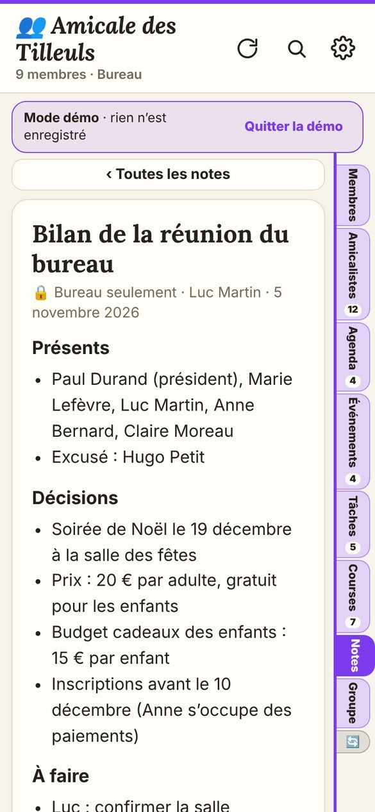
7 Qui voit quoi ?
| Admin | Bureau | Aide | |
|---|---|---|---|
| Membres, agenda, tâches, courses, événements partagés avec les aides | ✅ | ✅ | ✅ |
| Notes, amicalistes, bulletins d’adhésion, éléments « bureau seulement » | ✅ | ✅ | — |
| Inviter, donner des titres, passer en aide, retirer quelqu’un | ✅ | invite les aides | — |
| Modèle de bulletin d’adhésion et tarifs, archivage des bulletins | ✅ | lecture seule | — |